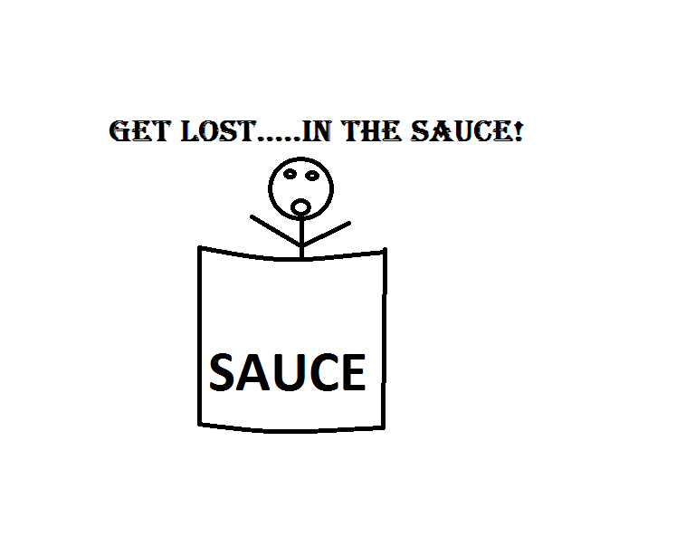

Here at Celebrity Doug's, we pride ourselves on being the best darn BBQ sauce since Thursday morning. Take a look around, browse products, learn about the company, and view upcoming events in the Des Moines area. Celebrity Doug's is a world renowned BBQ sauce manufacturer. With over one MILLION awards, we know you will love our sauce. Our sauce is love by everyone who tries it. Make sure to pick up a bottle today from our website or your local grocery store! We are serious about having the best sauce so, if you don''t love it, we will give you your money back! Thank you for visiting our site and remember:
